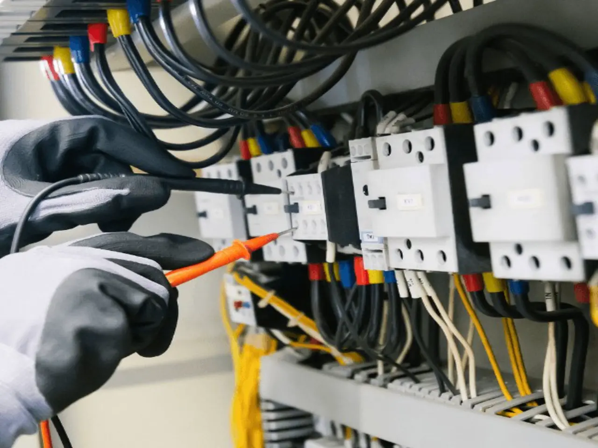
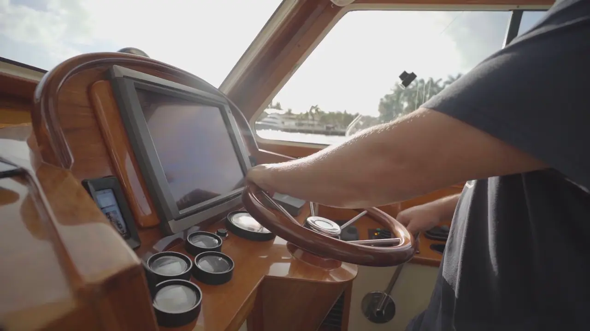
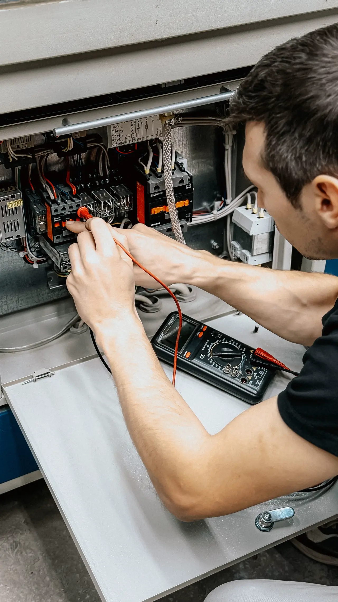
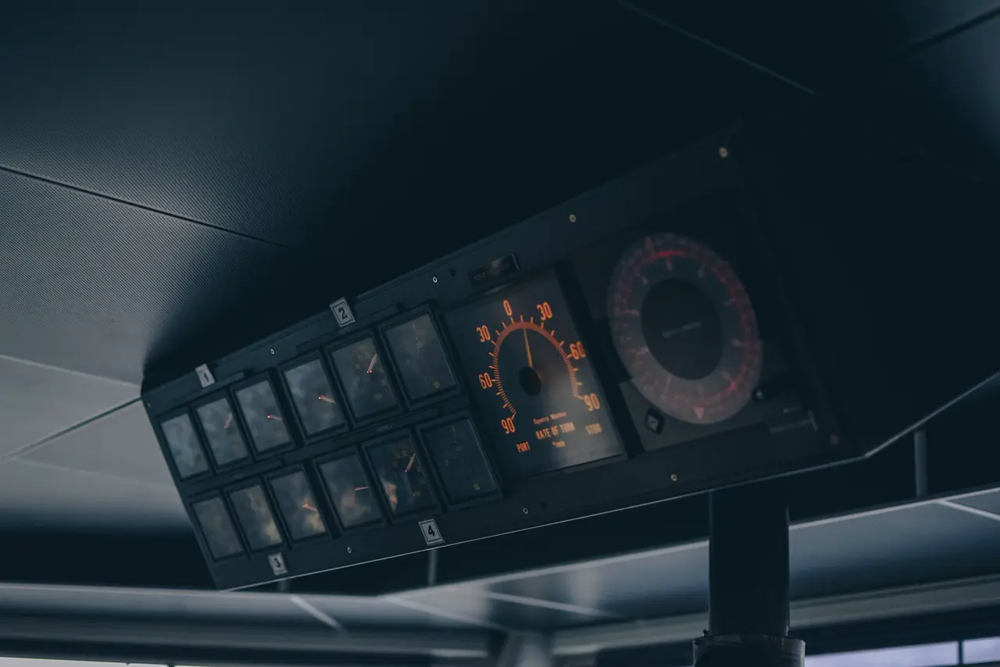
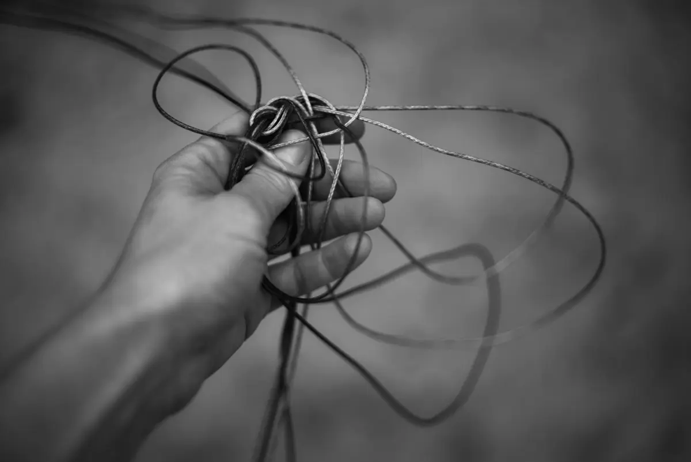
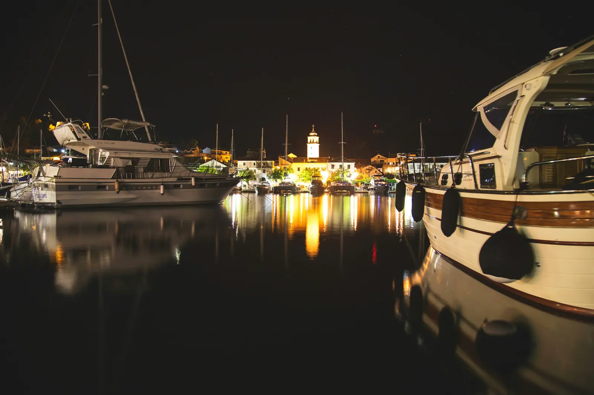
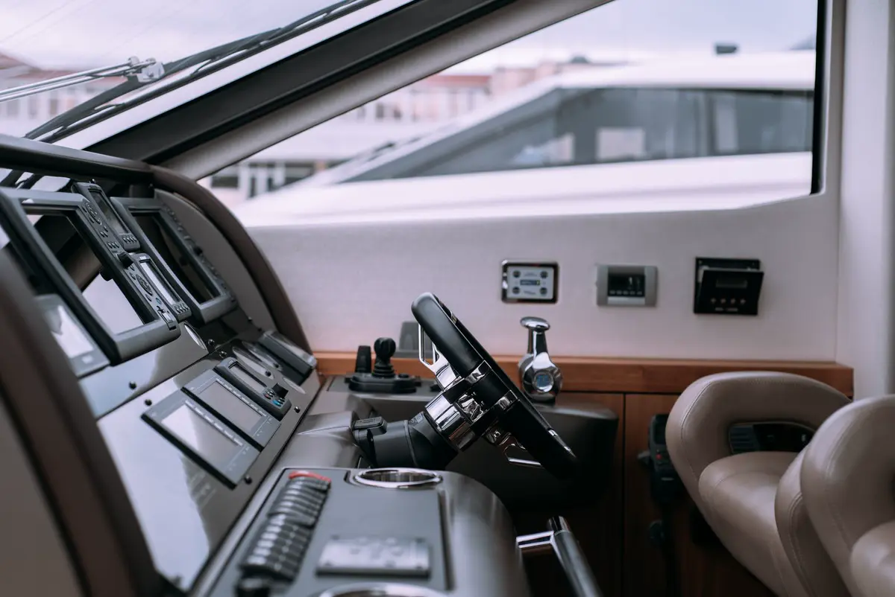
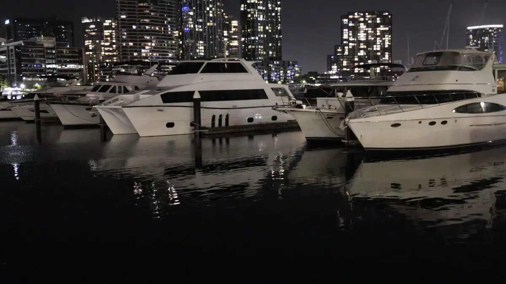

GOODSPEED
船舶電気工事
Garmin 正規代理店
海の上で
止まらない電気を
潮風と振動、
船の電気を
専門に

配線の引き直しから分電盤、バッテリーや充電系統の工事まで行います。

魚群探知機やプロッター、レーダーなどを、性能が出る位置と配線で取り付けます。

テスターで原因を突き止めて、根本から修理します。

新艇や中古艇の電装計画を、図面の段階から一緒に考えます。
GARMINGarmin 正規代理店
Garmin製品の
NMEA 2000機器は一本の幹線でつながります


船に合わせて選ぶ
艇の大きさ、用途、既存の機器を見て、機種と組み合わせを決めます。
配線から取付まで
電源、振動子の位置、ケーブルの防水処理まで施工します。
つないで、整える
機器同士の連携と初期設定を済ませ、使い方をご説明します。
ご相談から
お渡しまで

ご相談
船の使い方とご予算をうかがいます。
現地確認
船を拝見して、配線と設置場所を確認します。
お見積り
機器と工事を分けてご提示します。
取付・配線
電源から防水処理まで施工します。
設定・お渡し
機器の設定を済ませて、使い方をご説明します。
機器の購入だけでもお願いできますか。
可能です。
他社製の機器でも相談できますか。
はい。
どの港まで来てもらえますか。
対応エリアは
対応できる
電気と機器
新しく付ける工事から、
- POWER電源
- 12Vと24Vの
電源まわり。 バッテリーや 充電系統、 分電盤、 配線の引き直しまで - EQUIPMENT機器
- プロッター、
魚群探知機とソナー、 レーダー、 オートパイロット、 各種の計器 - WORK作業
- 新しく付ける工事と
入れ替え、 修理と点検、 新艇や中古艇の 電装計画



会社概要
- 社名
- GOOD SPEED株式会社
- 代表取締役
- 黒﨑 淳之介
- 所在地
- 〒212-0024
神奈川県川崎市幸区塚越2-260-20
地図を開く ↗ - 事業内容
- 船舶の電気工事・電装工事
航海機器の販売・取付・修理
Garmin 正規代理店 - 連絡先
- 090-4221-4430
kurosaki@gs-boat.com
船の電気のことは
ご相談ください
送信しました
ありがとうございます。内容を確認のうえ、ご連絡いたします。